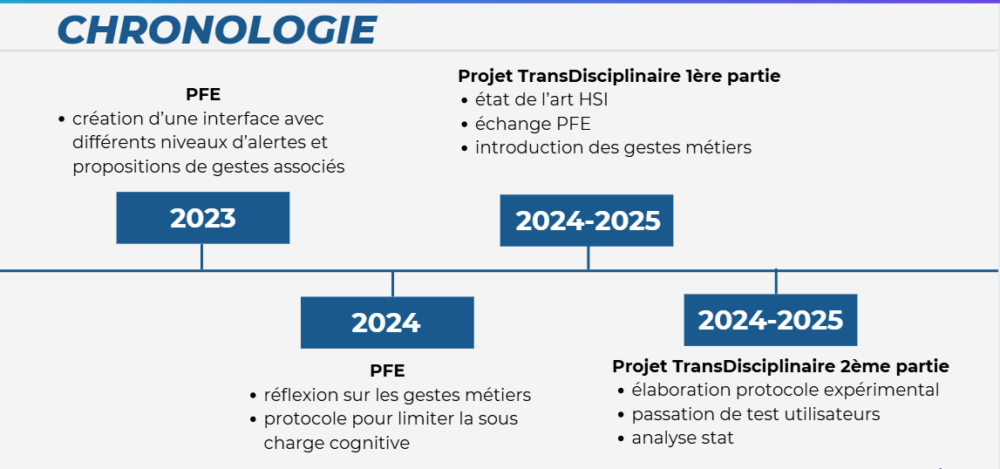

Première partie : Prise en main des connaissances et Revue scientifique
Introduction
Dans le contexte ferroviaire, l'hypovigilance des conducteurs peut entraîner des risques majeurs pour la
sécurité. Notre projet vise à étudier et proposer des solutions permettant de détecter et prévenir ces
états de sous-vigilance.
Objectifs
Analyser l’impact de la sous-charge cognitive sur la performance.
Intégrer des alertes adaptées et des gestes métier.
Proposer un prototype d’interface pour surveiller l’état de vigilance en temps réel.
Chronologie
2023 PFE : création d’une interface avec différents niveaux d’alertes et
propositions de gestes associés
2024 PFE : réflexion sur les gestes métiers protocole pour limiter la sous-charge
cognitive.
2024-2025 Trans.D : état de l’art HSI, échange PFE et introduction des gestes
métiers.

Revue scientifique
Nous avons soumis une revue scientifique portant sur l’analyse des méthodes de détection de
l’hypovigilance, la synthèse de la littérature existante et la proposition d’une approche innovante
basée sur des capteurs physiologiques et des algorithmes de machine learning.